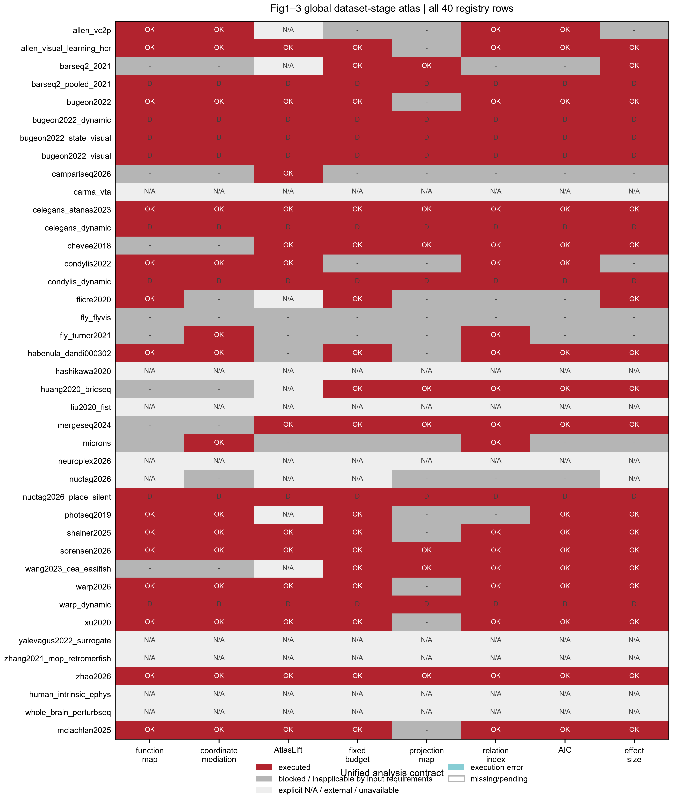
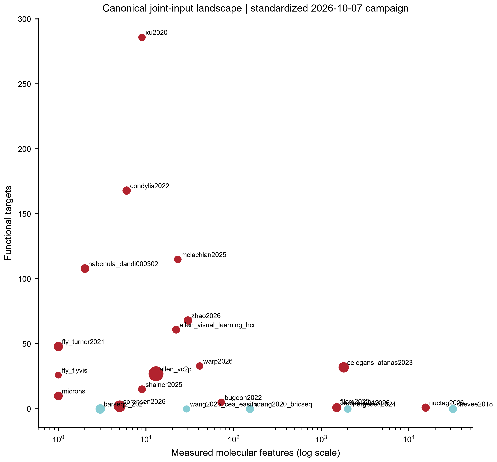
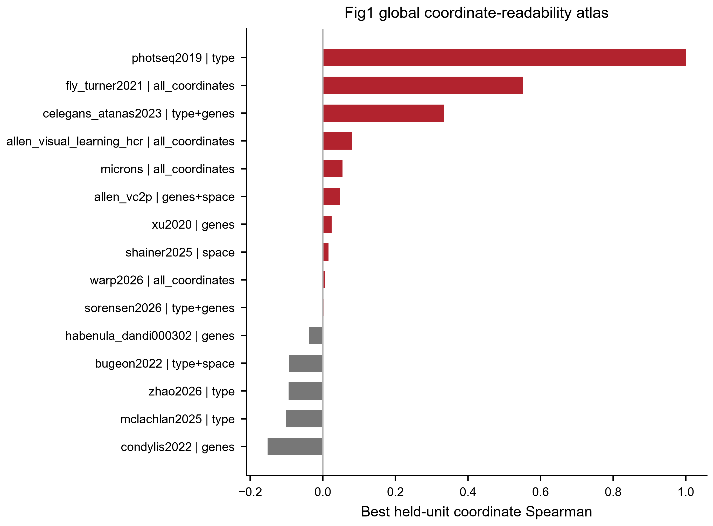
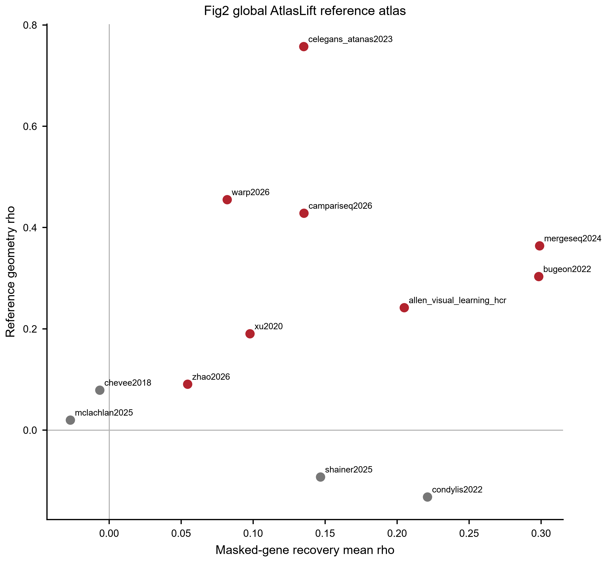
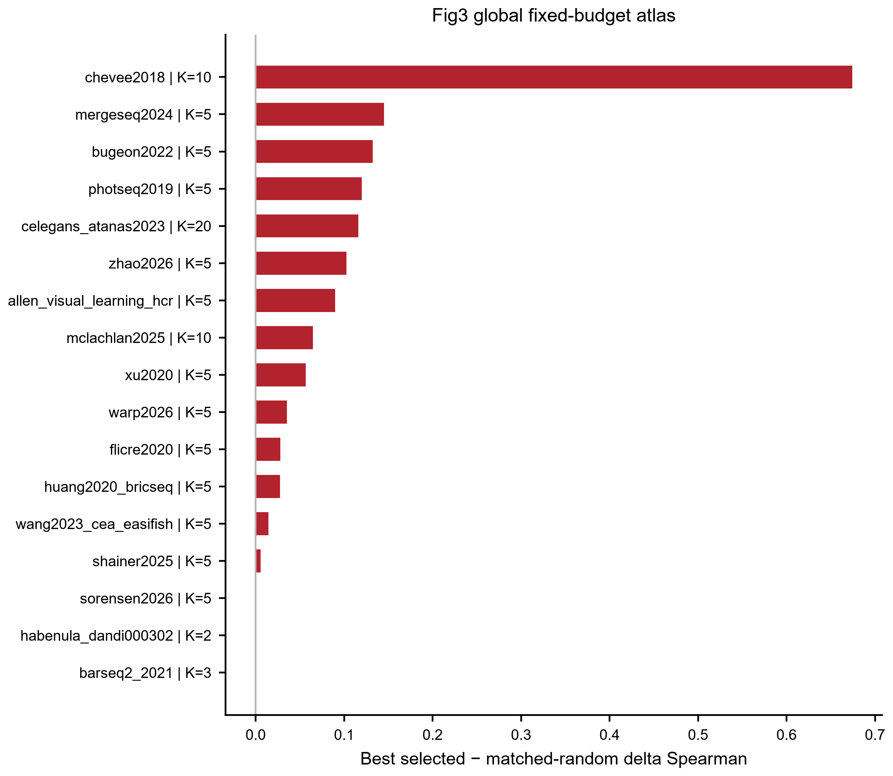

The manuscript figures are only the compressed narrative. This atlas is the full dataset-facing layer: all 40 registered datasets/contracts are shown, 26 canonical joint inputs are routed through the same Fig1–3 analysis contract, and every blocked/N/A/derived/external row remains visible.
Every dataset/contract remains visible.
Standardized Fig1–3 campaign targets.
At this publication snapshot.
Explicitly represented rather than silently excluded.

All registry rows × unified Fig1–3 stages.

Gene/functional dimensionality and biological-unit scale.

Fig1: strongest held-unit coordinate readability by dataset.

Fig2: reference recovery versus reference geometry where AtlasLift is anatomically eligible.

Fig3: strongest same-budget selected-versus-random delta Spearman by dataset.
| dataset | kind | input | campaign | function map | coordinate mediation | atlaslift | fixed budget | projection map | relation index | information criterion | effect size | strongest current readout | boundary |
|---|---|---|---|---|---|---|---|---|---|---|---|---|---|
| allen_vc2p | independent_dataset | CANONICAL_INPUT | COMPLETE | DONE | DONE | nan | BLOCKED | BLOCKED | DONE | DONE | BLOCKED | function rho 0.248 · coord rho 0.046 (genes+space) | The 13 gene__ columns are Cre-line one-hot indicators, not measured per-cell genes. |
| allen_visual_learning_hcr | independent_dataset | CANONICAL_INPUT | COMPLETE | DONE | DONE | DONE | DONE | BLOCKED | DONE | DONE | DONE | function rho 0.553 · coord rho 0.082 (all_coordinates) · atlas recovery 0.205 · best fixed-budget delta rho 0.090 | Fig4 is not a BehLift positive; Fig6 visual-evoked transfer to Zhao is a negative boundary; Fig7 is prospective ranking only. |
| barseq2_2021 | independent_dataset | CANONICAL_INPUT | COMPLETE | BLOCKED | BLOCKED | nan | DONE | DONE | BLOCKED | BLOCKED | DONE | best fixed-budget delta rho -0.000 | only one projection target and 3 genes; not evidence for shared operator |
| barseq2_pooled_2021 | derived_alias | DERIVED_PARENT | DERIVED_EXECUTED | DERIVED | DERIVED | DERIVED | DERIVED | DERIVED | DERIVED | DERIVED | DERIVED | function rho 0.607 · best fixed-budget delta rho 0.125 | same biological source as BARseq2 |
| bugeon2022 | independent_dataset | CANONICAL_INPUT | COMPLETE | DONE | DONE | DONE | DONE | BLOCKED | DONE | DONE | DONE | function rho 0.471 · coord rho -0.093 (type+space) · atlas recovery 0.298 · best fixed-budget delta rho 0.132 | do not confuse with frozen foundation-forward test where raw genes outperform latent |
| bugeon2022_dynamic | derived_contract | DERIVED_PARENT | DERIVED_FROM_PARENT | DERIVED | DERIVED | DERIVED | DERIVED | DERIVED | DERIVED | DERIVED | DERIVED | No scalar headline metric under this contract; see stage status and boundary. | must not be counted as independent replication |
| bugeon2022_state_visual | derived_contract | DERIVED_PARENT | DERIVED_FROM_PARENT | DERIVED | DERIVED | DERIVED | DERIVED | DERIVED | DERIVED | DERIVED | DERIVED | No scalar headline metric under this contract; see stage status and boundary. | must not be counted as independent replication |
| bugeon2022_visual | derived_contract | DERIVED_PARENT | DERIVED_FROM_PARENT | DERIVED | DERIVED | DERIVED | DERIVED | DERIVED | DERIVED | DERIVED | DERIVED | No scalar headline metric under this contract; see stage status and boundary. | must not be counted as independent replication |
| campariseq2026 | independent_dataset | CANONICAL_INPUT | COMPLETE | BLOCKED | BLOCKED | DONE | BLOCKED | BLOCKED | BLOCKED | BLOCKED | BLOCKED | atlas recovery 0.135 | one target means no BehLift/manifold completion; older huge negative R² values arose from variance-degenerate folds and should not headline |
| carma_vta | private/configured_dataset | NO_CANONICAL_JOINT_INPUT | CONFIG_REQUIRED | nan | nan | nan | nan | nan | nan | nan | nan | No scalar headline metric under this contract; see stage status and boundary. | not reproducible without configured recovery directory |
| celegans_atanas2023 | independent_dataset | CANONICAL_INPUT | COMPLETE | DONE | DONE | DONE | DONE | DONE | DONE | DONE | DONE | function rho 0.469 · coord rho 0.334 (type+genes) · atlas recovery 0.135 · best fixed-budget delta rho 0.116 | CeNGEN expression and Cook connectome were attached at neuron-class level. Held-animal splits repeat the same identities and cannot establish unseen-identity molecular generalization. |
| celegans_dynamic | derived_contract | DERIVED_PARENT | DERIVED_FROM_PARENT | DERIVED | DERIVED | DERIVED | DERIVED | DERIVED | DERIVED | DERIVED | DERIVED | No scalar headline metric under this contract; see stage status and boundary. | do not count independently |
| chevee2018 | independent_dataset | CANONICAL_INPUT | COMPLETE | BLOCKED | BLOCKED | DONE | DONE | DONE | DONE | DONE | DONE | atlas recovery -0.006 · best fixed-budget delta rho 0.674 | Shared operator adds essentially nothing beyond already strong direct mapping; do not call this a shared-law gain. |
| condylis2022 | independent_dataset | CANONICAL_INPUT | COMPLETE | DONE | DONE | DONE | BLOCKED | BLOCKED | DONE | DONE | BLOCKED | function rho 0.090 · coord rho -0.152 (genes) · atlas recovery 0.221 | Fig2 AtlasLift works, but Fig3 fixed-budget, Fig4 conditional completion and Fig5 operator do not provide robust positive support; Fig6/7 are correctly preflight/gate blocked. |
| condylis_dynamic | derived_contract | DERIVED_PARENT | DERIVED_FROM_PARENT | DERIVED | DERIVED | DERIVED | DERIVED | DERIVED | DERIVED | DERIVED | DERIVED | No scalar headline metric under this contract; see stage status and boundary. | same source as Condylis |
| flicre2020 | independent_dataset | CANONICAL_INPUT | COMPLETE | DONE | BLOCKED | nan | DONE | BLOCKED | BLOCKED | BLOCKED | DONE | function rho 0.209 · best fixed-budget delta rho 0.028 | Acquisition holdout is session-level. Genes-alone predict part of the activity-history axis, but that does not mean genes add unique information after the paired functional axis is known. |
| fly_flyvis | independent_dataset | CANONICAL_INPUT | COMPLETE | BLOCKED | BLOCKED | BLOCKED | BLOCKED | BLOCKED | BLOCKED | BLOCKED | BLOCKED | No scalar headline metric under this contract; see stage status and boundary. | cannot support gene→function claims |
| fly_turner2021 | independent_dataset | CANONICAL_INPUT | COMPLETE | BLOCKED | DONE | BLOCKED | BLOCKED | BLOCKED | DONE | BLOCKED | BLOCKED | coord rho 0.552 (all_coordinates) | not a molecular-functional dataset |
| habenula_dandi000302 | independent_dataset | CANONICAL_INPUT | COMPLETE | DONE | DONE | BLOCKED | DONE | BLOCKED | DONE | DONE | DONE | function rho 0.060 · coord rho -0.039 (genes) · best fixed-budget delta rho -0.000 | only 2 molecular markers; not suited to rich gene-program inference |
| hashikawa2020 | independent_reference | NO_CANONICAL_JOINT_INPUT | REFERENCE_ONLY | nan | nan | nan | nan | nan | nan | nan | nan | No scalar headline metric under this contract; see stage status and boundary. | do not force into Fig4/5 cell-level claims |
| huang2020_bricseq | independent_dataset | CANONICAL_INPUT | COMPLETE | BLOCKED | BLOCKED | nan | DONE | DONE | DONE | DONE | DONE | best fixed-budget delta rho 0.027 | Public held-unit operator is negative; retain previously observed native rank signal only under its original contract. |
| liu2020_fist | independent_dataset | NO_CANONICAL_JOINT_INPUT | NO_CANONICAL_JOINT_INPUT | nan | nan | nan | nan | nan | nan | nan | nan | No scalar headline metric under this contract; see stage status and boundary. | cannot support held-animal generalization |
| mergeseq2024 | independent_dataset | CANONICAL_INPUT | COMPLETE | BLOCKED | BLOCKED | DONE | DONE | DONE | DONE | DONE | DONE | atlas recovery 0.299 · best fixed-budget delta rho 0.145 | Direct projection predictability is real; relation index is null and shared operator is mixed, so do not claim discrete identity structure or universal shared law. |
| microns | registered_build_adapter | CANONICAL_INPUT | COMPLETE | BLOCKED | DONE | BLOCKED | BLOCKED | BLOCKED | DONE | BLOCKED | BLOCKED | coord rho 0.054 (all_coordinates) | Never call session-held results cross-animal; molecular Fig2/3/5/6/7 are scientifically N/A. |
| neuroplex2026 | independent_dataset | NO_CANONICAL_JOINT_INPUT | NO_CANONICAL_JOINT_INPUT | nan | nan | nan | nan | nan | nan | nan | nan | No scalar headline metric under this contract; see stage status and boundary. | not evidence for gene→function mapping |
| nuctag2026 | independent_population_dataset | CANONICAL_INPUT | COMPLETE | nan | BLOCKED | nan | nan | BLOCKED | BLOCKED | BLOCKED | nan | No scalar headline metric under this contract; see stage status and boundary. | very small N and pooled/tagged nuclei libraries |
| nuctag2026_place_silent | derived_alias | DERIVED_PARENT | DERIVED_EXECUTED | DERIVED | DERIVED | DERIVED | DERIVED | DERIVED | DERIVED | DERIVED | DERIVED | No scalar headline metric under this contract; see stage status and boundary. | same source family; not independent replication |
| photseq2019 | independent_dataset | CANONICAL_INPUT | COMPLETE | DONE | DONE | nan | DONE | BLOCKED | BLOCKED | DONE | DONE | function rho 0.355 · coord rho 1.000 (type) · best fixed-budget delta rho 0.120 | wrong-anatomy inclusion would create a false transfer test |
| shainer2025 | independent_dataset | CANONICAL_INPUT | COMPLETE | DONE | DONE | DONE | DONE | BLOCKED | DONE | DONE | DONE | function rho 0.089 · coord rho 0.016 (space) · atlas recovery 0.147 · best fixed-budget delta rho 0.006 | sparse 9-gene panel; do not force operator/foundation win |
| sorensen2026 | independent_dataset | CANONICAL_INPUT | COMPLETE | DONE | DONE | DONE | DONE | DONE | DONE | DONE | DONE | function rho 0.412 · coord rho 0.002 (type+genes) · best fixed-budget delta rho 0.000 | Function and projection are separate endpoint contracts; functional Fig7 is directional-ready but current perturbation fixture has zero overlap with the five Sorensen genes. |
| wang2023_cea_easifish | independent_dataset | CANONICAL_INPUT | COMPLETE | BLOCKED | BLOCKED | nan | DONE | DONE | DONE | DONE | DONE | best fixed-budget delta rho 0.014 | Only two animals; an R2 rescue from a worse negative baseline is not sufficient when absolute R2 stays negative and rank/AUC do not improve. |
| warp2026 | independent_dataset | CANONICAL_INPUT | COMPLETE | DONE | DONE | DONE | DONE | BLOCKED | DONE | DONE | DONE | function rho 0.136 · coord rho 0.007 (all_coordinates) · atlas recovery 0.082 · best fixed-budget delta rho 0.035 | static exact manifold amplitude is weak; dynamic/contextual representation is the stronger result |
| warp_dynamic | derived_contract | DERIVED_PARENT | DERIVED_FROM_PARENT | DERIVED | DERIVED | DERIVED | DERIVED | DERIVED | DERIVED | DERIVED | DERIVED | No scalar headline metric under this contract; see stage status and boundary. | derived contract, not independent dataset count |
| xu2020 | independent_dataset | CANONICAL_INPUT | COMPLETE | DONE | DONE | DONE | DONE | BLOCKED | DONE | DONE | DONE | function rho 0.538 · coord rho 0.024 (genes) · atlas recovery 0.098 · best fixed-budget delta rho 0.057 | small N; AtlasLift increments are state-dependent, not universal |
| yalevagus2022_surrogate | surrogate_dataset | NO_CANONICAL_JOINT_INPUT | SURROGATE_ONLY | nan | nan | nan | nan | nan | nan | nan | nan | No scalar headline metric under this contract; see stage status and boundary. | surrogate, not primary published joint dataset |
| zhang2021_mop_retromerfish | unavailable_joint_dataset | NO_CANONICAL_JOINT_INPUT | UNAVAILABLE_JOINT_DATA | nan | nan | nan | nan | nan | nan | nan | nan | No scalar headline metric under this contract; see stage status and boundary. | absence is source-data availability, not a negative biological result |
| zhao2026 | independent_dataset | CANONICAL_INPUT | COMPLETE | DONE | DONE | DONE | DONE | DONE | DONE | DONE | DONE | function rho 0.107 · coord rho -0.095 (type) · atlas recovery 0.055 · best fixed-budget delta rho 0.103 | Relative rescue from a negative type baseline is not sufficient. Native Zhao is not a positive Fig1 replication; preserve only independent transfer claims that pass their own target-only/ortholog nulls. |
| human_intrinsic_ephys | external_evidence_scope | NO_CANONICAL_JOINT_INPUT | EXTERNAL_SCOPE | nan | nan | nan | nan | nan | nan | nan | nan | No scalar headline metric under this contract; see stage status and boundary. | human endpoint is intrinsic ephys only; source-donor uncertainty must remain explicit |
| whole_brain_perturbseq | external_evidence_scope | NO_CANONICAL_JOINT_INPUT | EXTERNAL_SCOPE | nan | nan | nan | nan | nan | nan | nan | nan | No scalar headline metric under this contract; see stage status and boundary. | prospective nomination only; missing-edge global R² ~0 and simple low-rank residual models fail |
| mclachlan2025 | independent_dataset | CANONICAL_INPUT | COMPLETE | DONE | DONE | DONE | DONE | BLOCKED | DONE | DONE | DONE | function rho 0.067 · coord rho -0.101 (type) · atlas recovery -0.027 · best fixed-budget delta rho 0.065 | Never compare references at different K. Three valid held-unit folds limit biological-unit inference; random-panel p-values are conditional nulls. |
Strongest standardized readout: function rho 0.248 · coord rho 0.046 (genes+space)
Strongest standardized readout: function rho 0.553 · coord rho 0.082 (all_coordinates) · atlas recovery 0.205 · best fixed-budget delta rho 0.090
Strongest standardized readout: best fixed-budget delta rho -0.000
Strongest standardized readout: function rho 0.607 · best fixed-budget delta rho 0.125
Strongest standardized readout: function rho 0.471 · coord rho -0.093 (type+space) · atlas recovery 0.298 · best fixed-budget delta rho 0.132
DERIVED_FROM_PARENT. Derived from bugeon2022.
Strongest standardized readout: No scalar headline metric under this contract; see stage status and boundary.
DERIVED_FROM_PARENT. Derived from bugeon2022.
Strongest standardized readout: No scalar headline metric under this contract; see stage status and boundary.
DERIVED_FROM_PARENT. Derived from bugeon2022.
Strongest standardized readout: No scalar headline metric under this contract; see stage status and boundary.
Strongest standardized readout: atlas recovery 0.135
CONFIG_REQUIRED.
Strongest standardized readout: No scalar headline metric under this contract; see stage status and boundary.
Strongest standardized readout: function rho 0.469 · coord rho 0.334 (type+genes) · atlas recovery 0.135 · best fixed-budget delta rho 0.116
DERIVED_FROM_PARENT. Derived from celegans_atanas2023.
Strongest standardized readout: No scalar headline metric under this contract; see stage status and boundary.
Strongest standardized readout: atlas recovery -0.006 · best fixed-budget delta rho 0.674
Strongest standardized readout: function rho 0.090 · coord rho -0.152 (genes) · atlas recovery 0.221
DERIVED_FROM_PARENT. Derived from condylis2022.
Strongest standardized readout: No scalar headline metric under this contract; see stage status and boundary.
Strongest standardized readout: function rho 0.209 · best fixed-budget delta rho 0.028
Strongest standardized readout: No scalar headline metric under this contract; see stage status and boundary.
Strongest standardized readout: coord rho 0.552 (all_coordinates)
Strongest standardized readout: function rho 0.060 · coord rho -0.039 (genes) · best fixed-budget delta rho -0.000
REFERENCE_ONLY.
Strongest standardized readout: No scalar headline metric under this contract; see stage status and boundary.
Strongest standardized readout: best fixed-budget delta rho 0.027
NO_CANONICAL_JOINT_INPUT.
Strongest standardized readout: No scalar headline metric under this contract; see stage status and boundary.
Strongest standardized readout: atlas recovery 0.299 · best fixed-budget delta rho 0.145
Strongest standardized readout: coord rho 0.054 (all_coordinates)
NO_CANONICAL_JOINT_INPUT.
Strongest standardized readout: No scalar headline metric under this contract; see stage status and boundary.
Strongest standardized readout: No scalar headline metric under this contract; see stage status and boundary.
Strongest standardized readout: No scalar headline metric under this contract; see stage status and boundary.
Strongest standardized readout: function rho 0.355 · coord rho 1.000 (type) · best fixed-budget delta rho 0.120
Strongest standardized readout: function rho 0.089 · coord rho 0.016 (space) · atlas recovery 0.147 · best fixed-budget delta rho 0.006
Strongest standardized readout: function rho 0.412 · coord rho 0.002 (type+genes) · best fixed-budget delta rho 0.000
Strongest standardized readout: best fixed-budget delta rho 0.014
Strongest standardized readout: function rho 0.136 · coord rho 0.007 (all_coordinates) · atlas recovery 0.082 · best fixed-budget delta rho 0.035
DERIVED_FROM_PARENT. Derived from warp2026.
Strongest standardized readout: No scalar headline metric under this contract; see stage status and boundary.
Strongest standardized readout: function rho 0.538 · coord rho 0.024 (genes) · atlas recovery 0.098 · best fixed-budget delta rho 0.057
SURROGATE_ONLY.
Strongest standardized readout: No scalar headline metric under this contract; see stage status and boundary.
UNAVAILABLE_JOINT_DATA.
Strongest standardized readout: No scalar headline metric under this contract; see stage status and boundary.
Strongest standardized readout: function rho 0.107 · coord rho -0.095 (type) · atlas recovery 0.055 · best fixed-budget delta rho 0.103
EXTERNAL_SCOPE.
Strongest standardized readout: No scalar headline metric under this contract; see stage status and boundary.
EXTERNAL_SCOPE.
Strongest standardized readout: No scalar headline metric under this contract; see stage status and boundary.
Strongest standardized readout: function rho 0.067 · coord rho -0.101 (type) · atlas recovery -0.027 · best fixed-budget delta rho 0.065